No lens is perfect. Every design trades one compromise against another, and each lens leaves its own fingerprints on the picture. Some of them are faults you’ll want to correct in editing. Others, like a gentle darkening of the corners or a warm haze of flare, can become part of your style.
Barrel and pincushion distortion
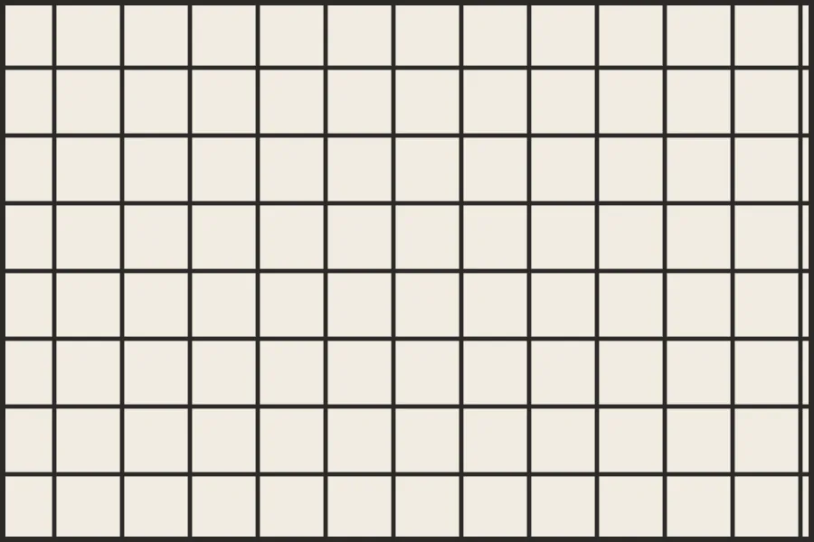
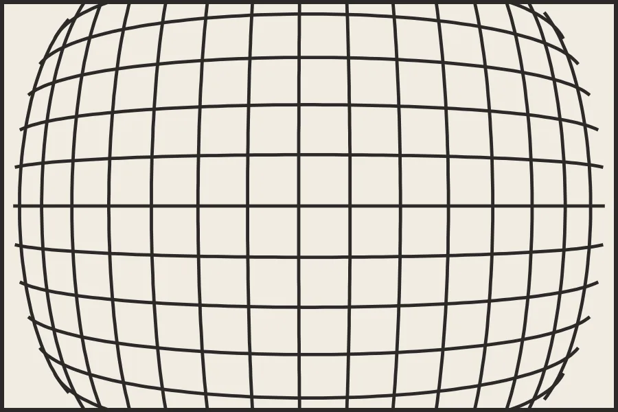
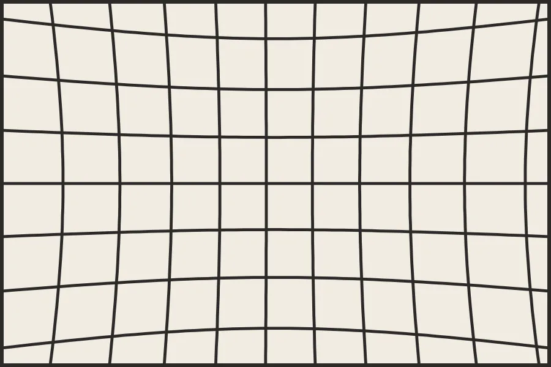
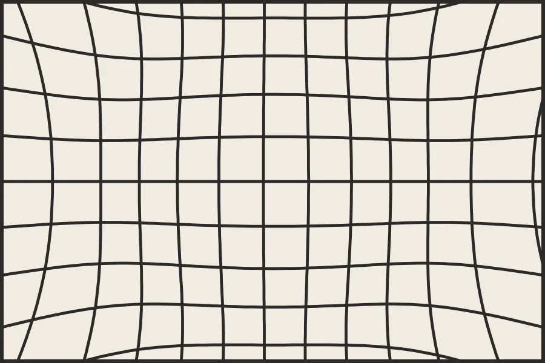
Distortion bends straight lines, most visibly near the edges of the frame. Barrel distortion bows them outwards, as if the picture were printed on the side of a barrel. It’s typical of wide-angle lenses and the wide end of zooms. Pincushion distortion pinches lines inwards towards the centre and shows up at the long end of many zooms. Some lenses mix the two, bowing lines out near the centre and in near the corners, a pattern often called moustache distortion.
You notice distortion most with straight lines near the edges, like horizons and door frames. In a landscape without straight lines it rarely matters. Editing programs correct it automatically with a lens profile, a description of each lens’s particular faults. Turning profile corrections on is one of the simplest improvements you can make to pictures of buildings.
Perspective distortion
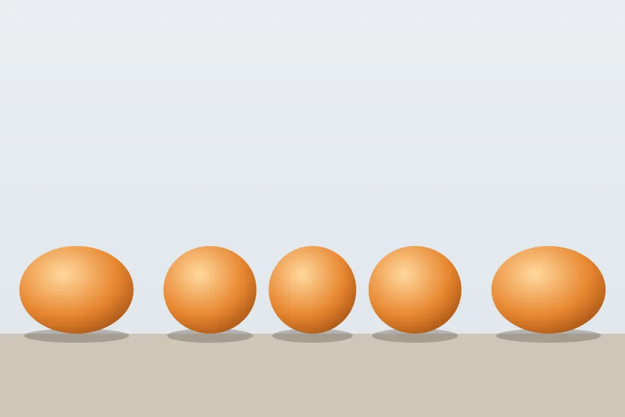
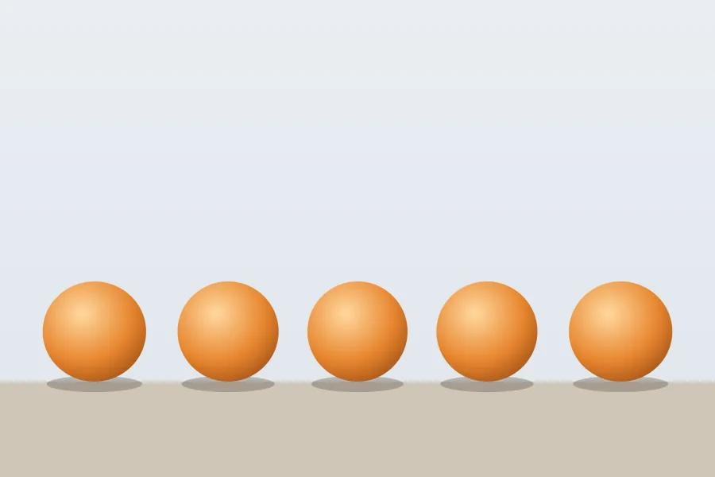
Wide-angle lenses stretch things near the edges and corners of the frame. That’s not a fault in the lens. It’s what happens when a very wide view of the world is flattened onto a rectangle. Round things near the corners turn oval, and the people at the ends of a group photo look wider than those in the middle.
The other side of wide-angle perspective is exaggerated size. Whatever is closest to the lens looks huge compared with everything behind it. That can be a powerful tool, making a flower tower over a valley. On a face it isn’t flattering. Keep people away from the corners of a wide frame, and for portraits step back and zoom in.
Converging verticals
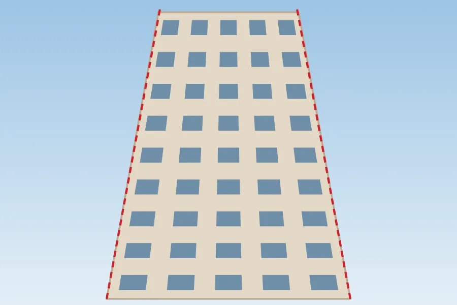
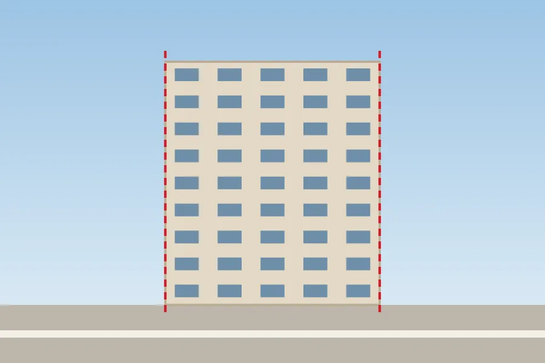
Tilt the camera up at a tall building and its sides lean towards each other, as if the building were falling backwards. This is perspective too, because the sensor is no longer parallel to the front of the building. Keeping the camera level and stepping back keeps the lines upright, though you’ll get more foreground in the picture.
Editing programs can straighten converging verticals afterwards, using guides you line up with the edges of the building. Leave some room around the building when you shoot, because the correction crops the edges of the picture. Architectural photographers use shift lenses, which slide the lens upwards while the camera stays level, so the lines are straight from the start.
Vignetting
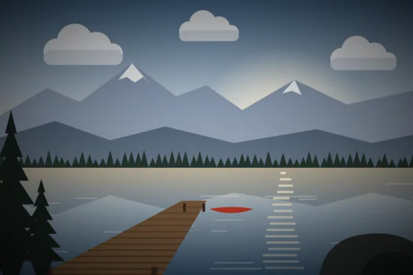
Vignetting is a darkening towards the corners of the frame. Almost every lens shows some at its widest aperture, and it fades as you stop down by a stop or two. Lens profiles remove it in editing. Many photographers add a little back on purpose, because darker corners pull the eye towards the middle of the picture.
Chromatic aberration
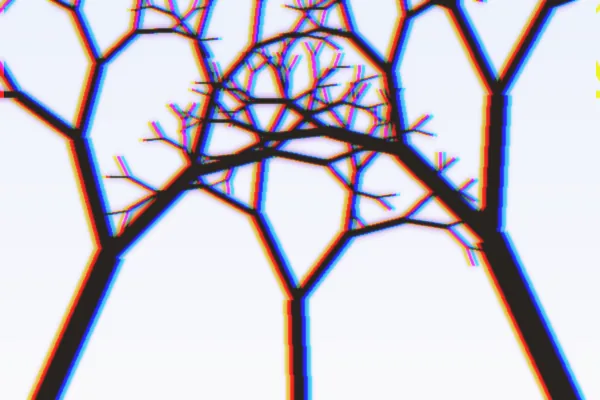
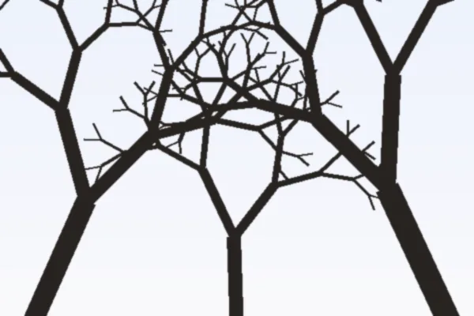
Glass bends different colours of light by slightly different amounts. When a lens doesn’t bring them all to the same point, you see coloured fringes along high-contrast edges, like dark branches against a bright sky. One kind shows as red and blue edges towards the corners of the frame and is easy to remove in editing. The other shows as purple and green fringes around the point of focus, mostly at wide apertures. Stopping down helps, and editing programs have a defringe tool for whatever is left.
Flare and ghosting
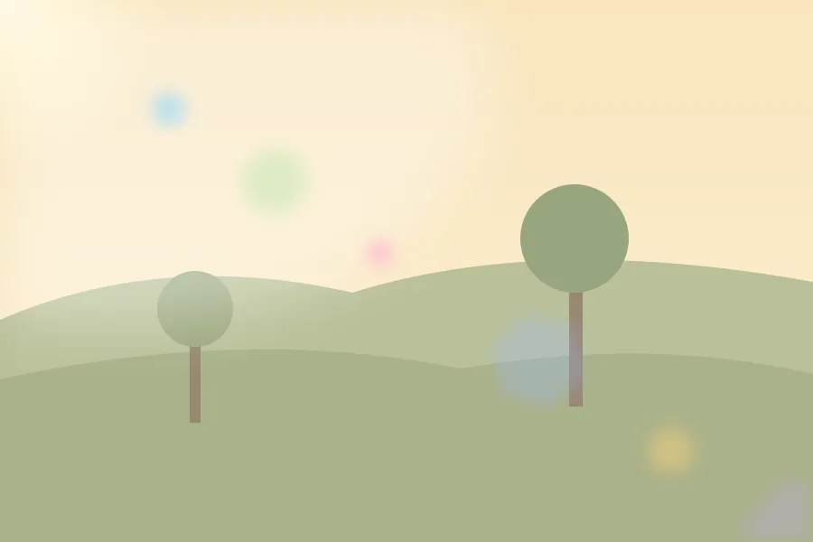
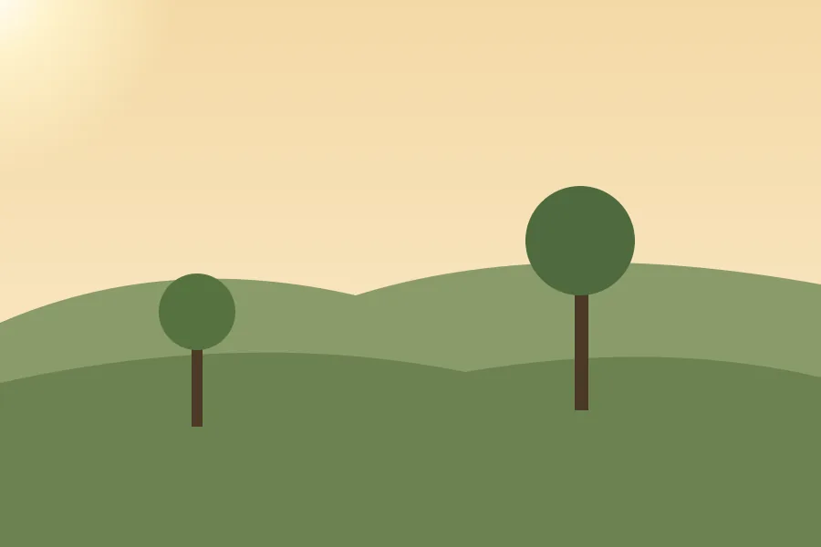
When a bright light shines into the lens, some of it bounces around between the glass elements. It can show up as a haze that washes out contrast, called veiling flare. It can also appear as a chain of coloured shapes across the frame, called ghosting, often shaped like the aperture.
A lens hood blocks light coming from outside the frame and fixes most cases. When the sun is in the picture, try moving slightly so it hides behind a tree or the edge of a building. At small apertures like f/16 the sun turns into a star with sharp points, which many photographers use on purpose. Sometimes a warm haze of flare is exactly the mood you want.
Sharpness across the frame
Most lenses are sharpest in the centre and a little softer towards the corners, especially at their widest aperture. Stopping down two or three stops usually evens it out. Some lenses also focus on a slightly curved surface instead of a flat one, so the corners can look soft while the centre is sharp. For flat subjects like documents or paintings, a smaller aperture keeps the whole frame crisp.
Exercises
Exercises C1–C4. Tick each one off when you’ve tried it. Your ticks stay on this phone or computer.
- C1
Straight lines
Photograph a tiled wall or a door frame at your widest focal length, with the lines near the edges. Then apply the lens profile in editing and compare.
- C2
Leaning building
Photograph a tall building with the camera tilted up, then from further back with the camera level. Straighten the first one in editing and compare the results.
- C3
Corners
Photograph an evenly lit wall or a clear sky at your widest aperture and again at f/8. Compare the corners.
- C4
Flare test
Shoot towards a bright light that sits just outside the frame, first without a hood and then with one, or with your hand shading the lens.
Photography Handbook, © 2026 Samskara Photo Club. Text and illustrations are licensed under CC BY-NC-SA 4.0. You may share and adapt them for non-commercial use if you credit the club and share your version under the same licence. Commercial use needs the club’s permission. The club logo is not covered by the licence.